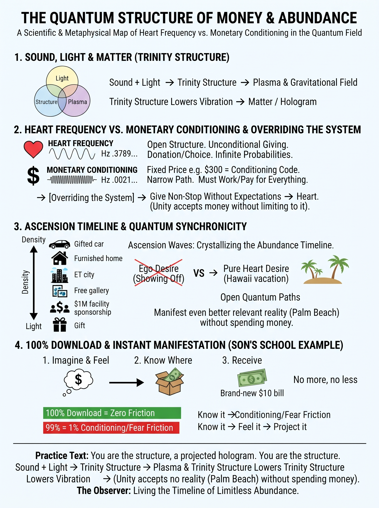
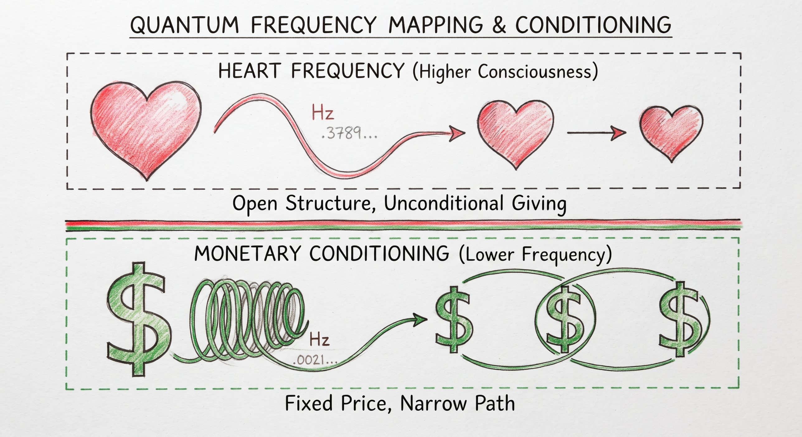
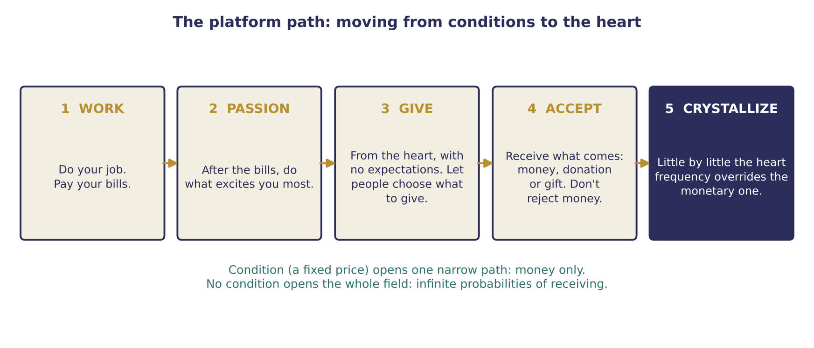

Money Structure
Why a fixed price is a condition, and how to open the whole field to abundance

Key teachings
4.1Where this comes from
The guidance for sharing this work was never to charge a price, but to let people donate for the time if they wished. That is confusing at first, since we all live in the money system, so the reason is taught step by step, through the quantum structure. It is shared as a map: use it or not, without judgment.
The talk recaps the structure (see 1.1) and adds one link: sound and light combine into a trinity structure, which becomes plasma and a gravitational field; when that lowers its vibration, it becomes matter. We are made this way, so every thought and emotion reprints the next reality (see 1.2–1.3).
4.2A price is a code in the field
Every thought and emotion has its own exact frequency, sound and mantra. A condition is a specific code you send because you want a specific result. Telling people "to talk to me it costs $300" sends that code. Since you are the structure, the field answers in kind: your abundance can then arrive only through the monetary system. Everything else in life also has to be paid for or worked for, because that is the frequency you projected.
The heart structure is the highest consciousness there is: still sound and light, but not dense. The money frequency arises through conditioning and is denser. Give from the heart, with no condition and with the other person free to choose, and you vibrate in that higher structure, leaving the whole field open.
This isn't punishment; it is "simply a matter of quantum physics." Live mostly by conditions and you build a hologram where, wherever you turn, someone is asking you for something. Remember, there is nobody outside of you (see 1.1): you recall and mimic that frequency in the people around you.

4.3Be the abundance
The new frequencies arriving with ascension are very high and match the heart. To see a reality you must be its frequency, so your deeds, emotions and treatment of people must be of the heart for you to shift into and crystallize a timeline of absolute abundance. That abundance might not involve money at all; one picture is extraterrestrials helping build cities. Consciousness itself is complete abundance.
The more conditions you give as frequencies rise, the more you drop away from that timeline, simply because you aren't being the abundance towards others.
4.4The platform path for people who must earn
For someone who provides for a family, the guidance is not to quit. Go to work and pay your bills. Then, after work, do what excites you most, hold that vibration, and give from the heart nonstop, without expectations. This balances the structure and opens the field to return to you what you gave. Little by little your passion's heart frequency overrides the monetary one.
Letting go of the belief that you need money to receive takes practice, because we are bombarded daily. The way through is step by step, without fear.
What arrives may still be money, because you don't reject it, but through the heart: someone loves your paintings or handbags and offers a free gallery and sponsorship. Charging high prices to save for land or a facility is "pure illusion": it crystallizes the money route, when someone could instead call and fund it outright. If they do, you accept, because you simply did your job to the best of your abilities.

4.5Don't reject money — just don't limit yourself to it
Rejecting money entirely isn't the structure either, because unity is everything. Accept it when it comes. The point is not to make money the only route: a condition is "a very narrow spec of the entire flow," while consciousness is limitless. The image: why reach into one small corner of the bag when the whole bag is yours?
And if the bank account looks empty, don't drop your emotion; that is the illusion (see 1.7). Keep projecting the positive.
4.6Exactly what you need, at 100%
The example: money was needed for a child's school and the house was empty; an image of money came, with where to look, and exactly the amount needed was found. The lesson: you can shift into the reality that gives you exactly what you need, no more and no less.
It must be 100% (see 1.5). At 99% you may still manifest, but the missing 1% creates friction: the condition. Even with practice, money and family worries can sit in the back of the mind; the practice is to let go completely. "Know it, feel it, to project it" — not see it first.
4.7Heart wants versus ego wants
Manifesting moment to moment without direction is random. What arrives may not be exactly what you pictured (the red car or the blue one) but something similar and relevant. So check: do I want this from the heart, or from ego and to show off (see 2.9, 3.4)? If it is pure and you truly need it, synchronicities come. Maybe not Hawaii, but a beach and palm trees that turn out better than you expected, because you let the field choose what is best. You still have to be the vibration of it.
4.8Why give to others, and when people take
It isn't only for others' benefit. Giving to others removes the self-absorption, and that purity is the frequency you project into your next reality. The heart vibration and the money vibration are "absolutely different" timelines: one dense and conditioned, the other unlimited. The condition isn't only money; "I'll give you this if you give me that" is a condition too. Let the other person decide, from the heart, what to give.
If someone could give but chooses to use you, "that frequency of using somebody… stays in that person's reality, not yours." You did your job. Because you projected love, another person may come and give you double.
A caution is added. Pricing people out of help that comes from a higher order, whether a healer or even a doctor, rejects part of consciousness, and so part of yourself. Rejection then comes back to you through some situation, because the structure mirrors what you do.
4.9Balance, wholeness and the future
It isn't left brain versus right brain. Use logic and emotion together; wholeness comes from the heart. You can still receive money while giving; what changes is that you receive through the heart frequency.
Plenty of good, hard-working people don't operate this way, and that doesn't make them less good. But in the quantum structure, nobody is outside you: what matters is your own vibration, not what others charge. Do more of the money and you crystallize more of the money. The work is still real and challenging, a challenge you chose by coming here during ascension.
The guidance is said never to have asked for payment; they asked for devotion, giving and sharing, "even if it's one person you're talking to." The talk pictures a future where free energy and technology make money unnecessary, and points to Michael Tellinger's Ubuntu ideas as one model. Higher beings, it says, will connect with people by what they do for humanity, not by fame.
The method — Opening the Field
- Spot the condition. A fixed price, "I'll give if you give back", or the belief "only money can bring me this".
- Keep your platform. Do your job and pay your bills.
- After the bills, follow your passion daily and hold that excited vibration (see 1.6, Q9).
- Give from the heart, with no expectations. Let people choose what, if anything, to give back.
- Accept what comes, whether money, a donation or a gift. Don't reject money; just don't limit yourself to it.
- When money looks short, don't drop your emotion. Give gratitude, know you have what you need, and hold it at 100% (see 1.7).
- Check the want. Heart or ego? Only for me, or flowing to others too?
- Practise step by step, without fear. It is a lifestyle and a timeline you crystallize over time.